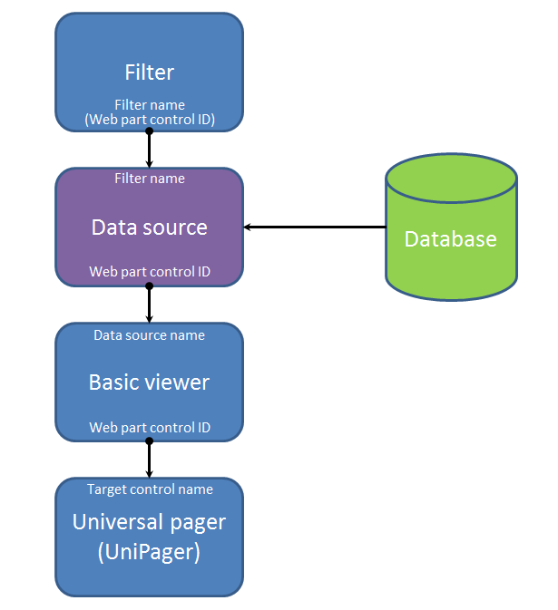
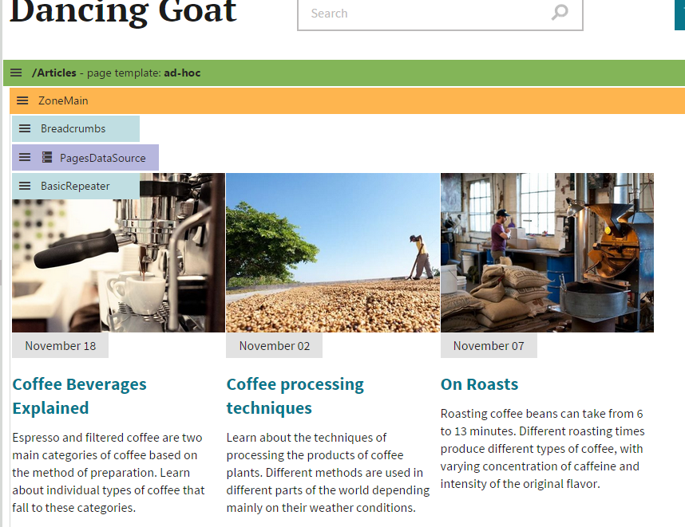
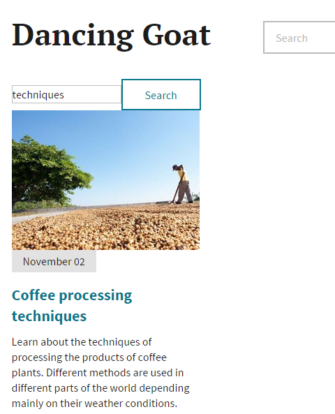
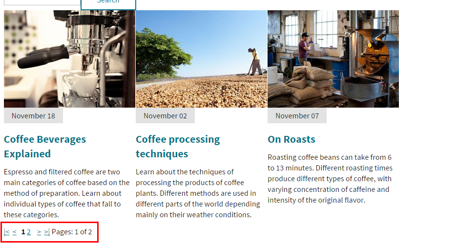

Filtering and paging data
Paging and filtering are features that help users navigate through large lists of data.
Filters allow users to limit which data is displayed directly on the live site. The system provides several built-in filters for various types of data, and also allows developers to create custom filters. Filters connect to data sources, and dynamically generate additional conditions that the system applies when loading data.
Pagers separate lists of data into multiple pages and provide navigation between the pages. To implement paging, connect a Universal pager to your listing components. You have full control over the appearance of the pager (the design is based on transformations). See the documentation of the UniPager control for details.
Note: When adding filters or pagers to lists of data, we strongly recommend using a separate data source web part connected to Basic listing web part. Because of differences in the life cycle of individual components, filters and pagers may not work correctly in all possible scenarios for web parts with built-in data sources.
The diagram below illustrates how to link together data web parts with a pager and filter. You can place the web parts anywhere on the same page without any change in functionality. The captions at the beginning and end of the lines between the web parts show the properties that connect the components. The linked properties must have identical values.

Diagram showing how filters and pagers connect with data web parts. The properties next to the connecting lines must have identical values.
Data loading when using paging
By default, page and query data sources load data per-page when you connect a Universal pager. Instead of retrieving the full data for all pages, the data source loads and caches individual pages separately, which reduces the initial load time. You can disable per-page loading through the Load pages individually property of data source web parts (in the System settings category).
Note: To use per-page loading for query and page attachment data sources, you need to fill in values into the ORDER BY expression and Selected columns properties.
Example
The following example demonstrates how to provide filtering and paging functionality for a list of articles. You can use the same approach for any type of data.
Note: The example works with data from the sample Dancing Goat site. You can, for example, replace the original Repeater web part for displaying articles on the Articles page.
Creating the list of articles
Start by creating a page with components that generate a basic list of articles:
Open the Pages application.
Create a new page on your website.
Open the Design tab.
Add the Pages data source web part onto the page.
Set the following properties for the Pages data source:
Path: /Articles/%
Page types: DancingGoat.Article
Click Save & Close.
Add the Basic repeater web part below the data source.
Set the following properties for the Basic repeater:
Data source name: PagesDataSource (the default ID of the Pages data source web part)
Transformation name: DancingGoat.Article.List
Selected item transformation: DancingGoat.Article.Detail
Click Save & Close.
The data source loads all pages with articles on the website, and the connected Basic repeater displays the data on the page.

Design tab of a page after adding the Page data source and Basic repeater web parts
Adding a filter
The system provides a default filter that allows users to limit which articles the page displays (based on various criteria). To integrate the filter:
Add the Page name filter web part above the Basic repeater.
Set the web part's Web part control ID property to PageNameFilter.
Click Save & Close.
Configure (double-click) the Pages data source web part.
Type the filter's name (PageNameFilter) into the data source's Filter name property.
Click Save & Close.
The filter is now connected to the Pages data source web part. The data source loads a limited set of items according to the selected filter options.
You can try out the filter on the live site. For example, use the filter to display only articles containing the word techniques.

Page name filter web part on the live site
Setting up paging
Paging can be useful when displaying a large number of records. To add a pager to the list of articles:
Add the Universal pager web part onto the page, below the Basic repeater.
Set the following properties for the pager:
Target control name: BasicRepeater (the default ID of the Basic repeater web part)
Page size: 3
Paging mode: Postback
Pager layout transformation: CMS.PagerTransformations.General-PagerLayout
Click Save & Close.
The Universal pager connects to the Basic repeater and separates the displayed data into multiple shorter pages.
You can try out the pager on the live site. The page now only includes up to 3 articles, and allows users to switch between pages.

Default appearance of the Universal pager below a list of data